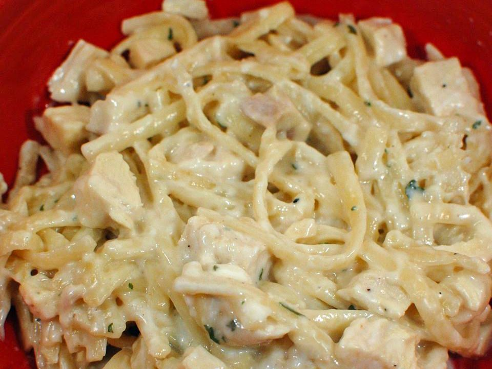

Home
Chicken Alfredo

Description
Make a delicious creamy chicken alfredo with store-bought Alfredo sauce! Yes, it really is that simple!
Prep Time: 15 minutes // Cook Time: 25 minutes
Total Time: 40 minutes // Makes 12 servings
Ingredients
- 2 pounds skinless, boneless chicken breasts, cut into chunks
- Salt and ground black pepper to taste
- 2 (16 ounce) packages thin spaghetti
- 4 (15 ounce) jars Alfredo sauce
- 2 tablespoons Italian seasoning
- 2 tablespoons garlic powder
- 2 tablespoons chopped onion
- 2 tablespoons chopped fresh basil
- 2 tablespoons salt
- 2 tablespoons ground black pepper
- 1 tablespoon onion powder
- ½ tablespoon cayenne pepper, or to taste
- 1 ½ cups shredded Parmesan cheese (Optional)
- 2 cups chopped broccoli (Optional)
Steps
- Season chicken with salt and pepper. Heat a large skillet over medium-high heat. Add chicken and cook until no longer pink in the center and juices run clear, 7 to 10 minutes.
- Bring a large pot of lightly salted water to a boil. Cook thin spaghetti in the boiling water, stirring occasionally, until tender yet firm to the bite, 8 to 10 minutes.
- Meanwhile, add Alfredo sauce to the chicken along with Italian seasoning, garlic powder, onion, basil, salt, black pepper, onion powder, and cayenne. Bring to a slight boil; stir in Parmesan cheese. Cook mixture until cheese is melted and you are able to lift a spoon out of the sauce without cheese hanging onto it, 3 to 5 minutes.
- Place a steamer insert into a saucepan and fill with water to just below the bottom of the steamer. Bring water to a boil. Add broccoli, cover, and steam until tender, 2 to 6 minutes. Add broccoli to sauce.
- Drain cooked pasta. Scoop into individual serving bowls and pour sauce on top.